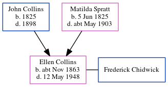

Ellen Jane Chidwick (née Collins) cNov 1863 - 1948
[ Home ] | [ Calendar ] | [ Surnames Index ] | [ Census Index ] | [ Family History ]The child of John Collins (a shepherd) and Matilda Spratt, Ellen Collins, the first cousin three-times-removed on the father's side of Nigel Horne, was born in Minster, Thanet, Kent, England c. Nov 18631 and baptized there on Jan 3, 1864. She married Frederick Chidwick at St Anthony The Martyr, Alkham, Kent, England on Oct 15, 18814. On Apr 2, 1871, she was living at Cottage, Birchington, Kent5.
She died on May 12, 1948 at 86 Garden Road, Folkestone, Kent2,3 and was buried at Cheriton Road Cemetery, Folkestone on May 15, 1948.
Parents
- John was born in 1825
- Matilda was born on Jun 5, 1825
Citations
- England & Wales births 1837-2006 - Findmypast
- England & Wales Government Probate Death Index 1858-2019 - Findmypast
- England & Wales deaths 1837-2007 - Findmypast
- Kent, Canterbury Archdeaconry marriages 1538-1928 - Findmypast
- From her mother's census entry (was age 6 and the daughter of the head of the household)
Media
England & Wales births 1837-2006 - BMD/B/1863/4/AZ/000234/007
Kent, Canterbury Archdeaconry marriages 1538-1928 - GBPRS/CANT/M/97246088/2
England & Wales marriages 1837-2008 - BMD/M/1881/4/AZ/000067/174
England & Wales deaths 1837-2007 - BMD/D/1948/2/AZ/000147/041
England & Wales Government Probate Death Index 1858-2019 - GBOR/GOVPROBATE/C/1948-1948/00031409
Family Tree
Generated by ged2site. Last updated on Jun 11, 2024